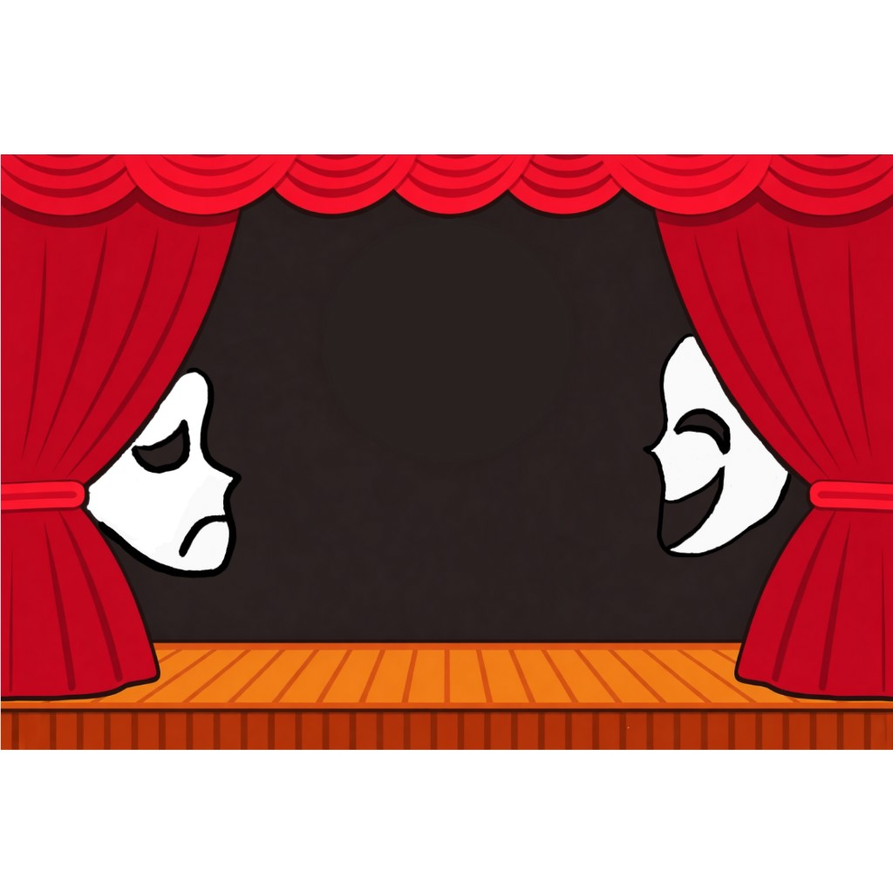

SpeedDeath
Jeu multijoueur en réseau local. J'ai écrit le serveur TCP multi-clients et le protocole de synchronisation entre les deux joueurs.
Détails →EPITA · Promotion 2030
$ ▍
Étudiant en 2e année de cycle préparatoire. Je fais communiquer des machines : serveurs TCP, objets connectés, outils de surveillance.
Ce portfolio met en valeur mes acquis théoriques et pratiques en développement réseau, et ma capacité à porter un regard critique sur mes propres projets.
Je suis en 2e année de cycle préparatoire à l'EPITA. Ma formation est très orientée algorithmique et structures de données : allocation dynamique, listes chaînées, arbres, fonctions de hachage.
Je programme en C bas niveau, je travaille sous Linux (Ubuntu, NixOS) et j'utilise Git/GitLab au quotidien, seul ou en équipe comme sur le projet J3D.
Premier projet embarqué personnel sur ESP32.
Cycle préparatoire : C, algorithmique, systèmes.
Jeu multijoueur en équipe, je prends en charge le serveur réseau.
Développement et test logiciel en environnement R&D.
Candidature en préparation pour un semestre de mobilité.

Jeu multijoueur en réseau local. J'ai écrit le serveur TCP multi-clients et le protocole de synchronisation entre les deux joueurs.
Détails →Sonde DS18B20 sur ESP32 : serveur web pour le réseau local et client HTTPS vers le cloud. Adapté du projet open source ToMe25.
Détails →Script qui vérifie toutes les 60 s qu'un site répond, interprète les codes HTTP et prévient quand le service revient.
Détails →Deux petites simulations pour voir comment fonctionnent mes projets. Tout se passe dans votre navigateur, aucune requête réelle n'est envoyée.
Chaque message est une ligne JSON. Le serveur relaie le message à l'autre joueur.
# Cliquez sur une action pour envoyer un message
Choisissez une réponse : le script décide si le site est disponible.
Sélectionnez un code de réponse.
curl -4 -L -s -o /dev/null -w "%{http_code}" \
--connect-timeout 10 --max-time 20 "$URL"
Immersion dans un environnement de recherche et développement professionnel (environnement Semia), sur des sujets de développement, de test et de maintenance : règles, autorisations et mécanismes de planification.
Sockets TCP, requêtes HTTP/HTTPS, flux de données JSON.
Threads, files, gestion de la concurrence. Linux (Ubuntu, NixOS).
Je l'ai écrit moi-même et je sais l'expliquer.
Je l'ai utilisé ou adapté dans un projet.
Je l'ai rencontré, à approfondir.
Évaluation honnête, établie à partir du code et de l'historique git de mes projets. Ce sont des projets étudiants à petite échelle : aucune compétence n'atteint encore la maîtrise.
Synchronisation du code réseau avec les autres modules du jeu SpeedDeath, au sein d'une équipe de 5.
Apprentissage seul des protocoles de communication web sur microcontrôleur.
Je sais évaluer les limites de mes solutions techniques, et je les documente.
Mes projets m'ont fait passer de la théorie à la pratique. Voici ce que je veux améliorer ensuite.
Remplacer les threads du serveur SpeedDeath par des entrées/sorties asynchrones (asyncio ou selectors), et passer les positions en UDP avec un numéro de séquence, en gardant TCP pour les événements qui doivent arriver.
Sortir les secrets du code source, protéger le point d'accès de configuration par un mot de passe, activer le mode Deep Sleep et publier en MQTT vers un broker authentifié.
Capturer les échanges de mes projets pour observer concrètement le handshake TCP, les requêtes DNS et la négociation TLS, et documenter l'analyse.
Je prépare une candidature pour le semestre de printemps 2027 à SeoulTech (Corée du Sud), pour approfondir la sécurité informatique, l'intelligence artificielle et l'informatique quantique, dans un nouvel environnement universitaire et culturel.